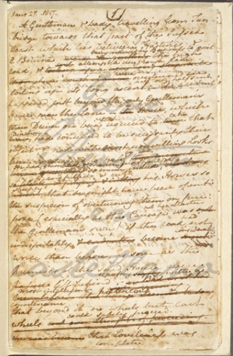
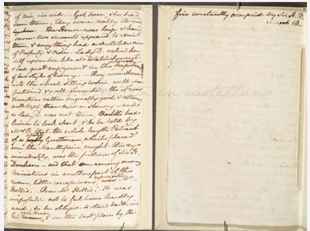
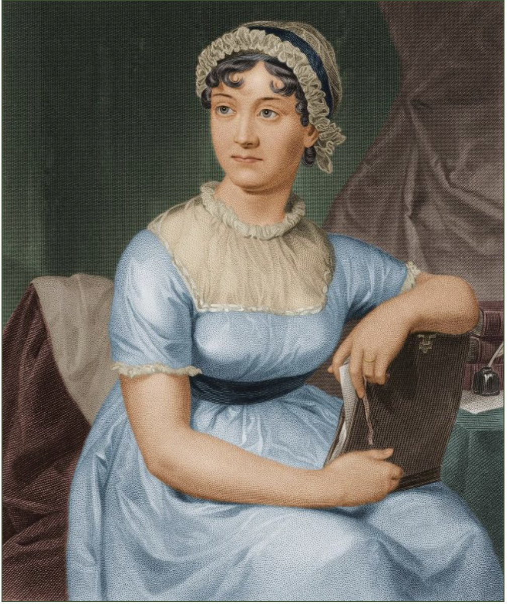
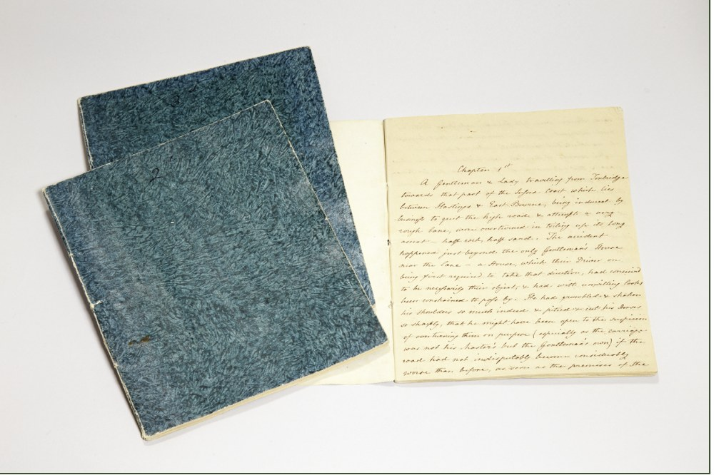
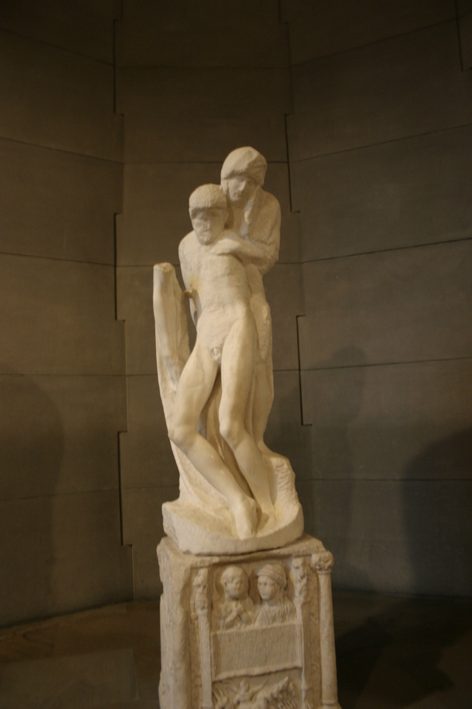
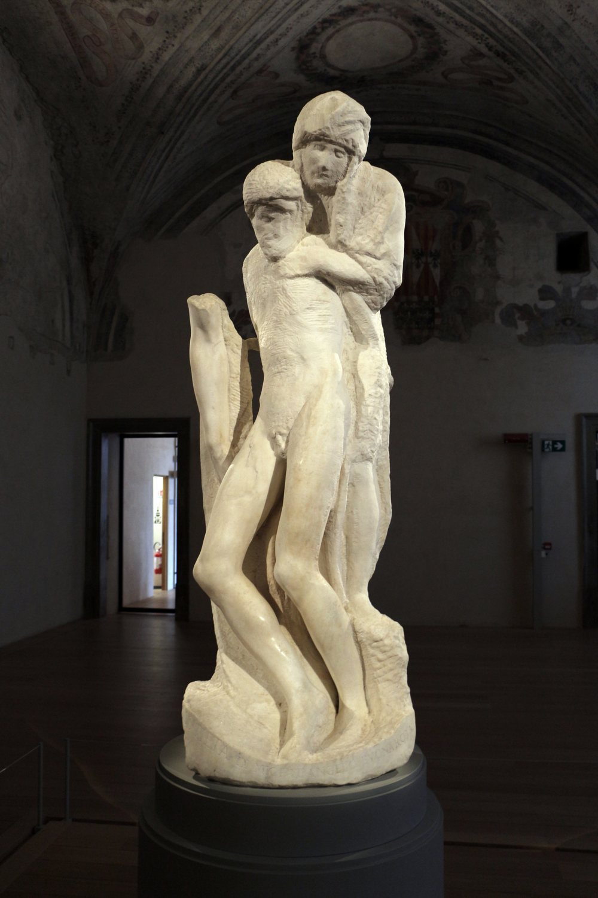
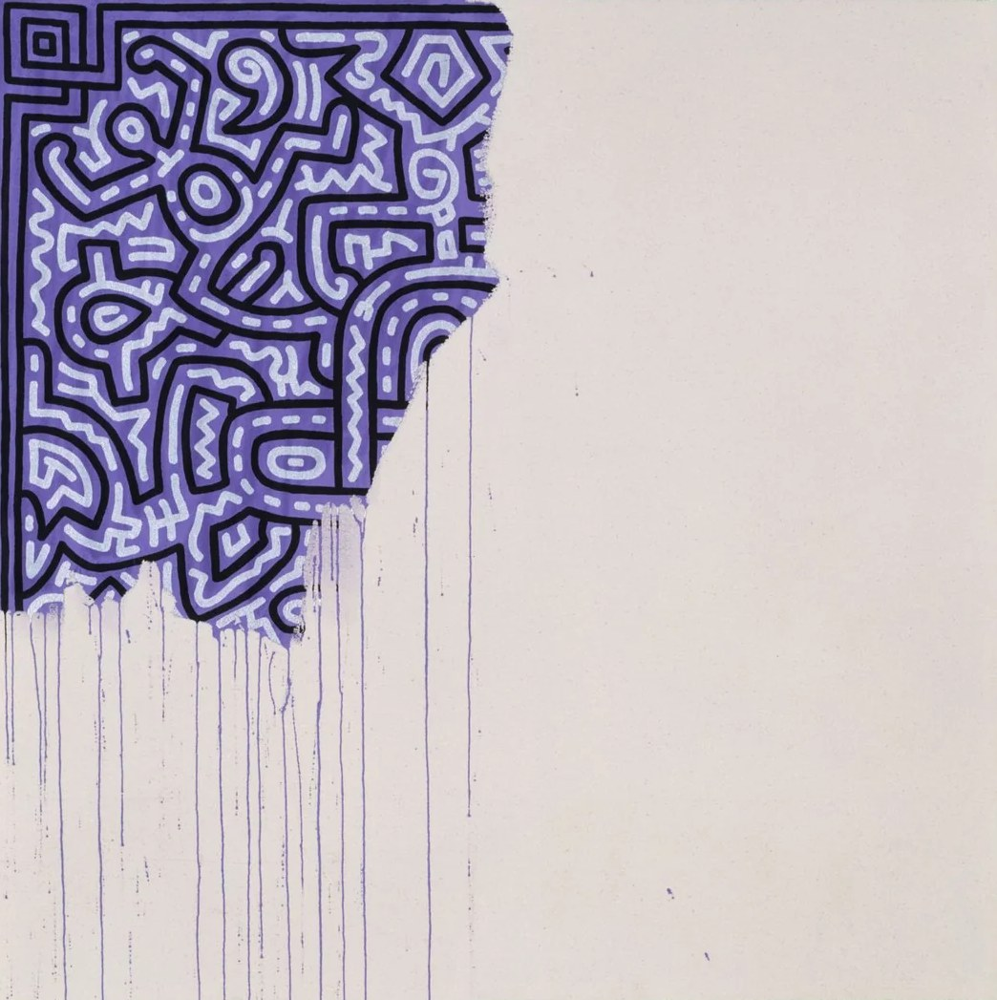

27 січня 1817.
Джейн Остін починає новий роман.
18 березня 1817.
Вона пише 11½ розділів — і зупиняється.
Далі аркуш порожній.
1817 · рукопис
Через чотири місяці її не стало.
Ми буквально маємо її останні написані сторінки.
Рукопис зберігається в King’s College у Кембриджі, а Кембридж оцифрував його — сторінки може погортати кожен.
Оскільки текст давно у вільному доступі, «Сендітон» дописували інші: «Інша леді» (Марі Доббс, 1975), Джулія Барретт та багато інших. На обкладинці все одно великими літерами — «Джейн Остін», а співавтора вказують нижче.
Після британського серіалу «Сендітон» (2019) інтерес спалахнув знову: рукопис перевидають, часто з кінообкладинкою.
Її зупинила смерть. Але роман продовжує жити — чужими руками.



Він передумав.
І передумав знову.
1552–1564
НезавершеністьПошук
Великий скульптор Відродження, автор «Давида», усе життя шукав ідеальне людське тіло. Цю П’єту — Марію, яка тримає мертвого Христа, — він різьбив до останніх днів.
Він уже вирізав частину фігур, а через роки почав знищувати зроблене, щоб знайти в тому самому камені іншу скульптуру. Тіла стали видовженими, майже безтілесними. Від першої версії лишилася права рука Христа.
Майстер досконалості закінчує життя твором, що виглядає недосконалим.

Зображення: «Незакінчена картина», 1989Ця картина не обірвалася.
Її залишили порожньою
навмисно.
Кіт Гарінг, 1989
Чи ми бачимо незакінчену картину — чи завершену картину про незавершеність?
Що ви залишили
незавершеним?
Можливо,це варто завершити.
Можливо,ви це вже переросли.
Можливо,воно й не мало закінчитися.
Музей не має
відповіді.
Він лише відчиняє двері до пошуку.
Решту ви побачите на власні очі — у музеї.
Фрагмент колекції.
Відкриття — дата згодом
Джейн Остін: портрет — гравюра XIX ст.; рукопис «Сендітон» — King’s College, Cambridge. Фото — Wikimedia Commons: П’єта Ронданіні, загальний вигляд — Sailko; деталі — Giovanni Dall’Orto. Незакінчена картина, Кіт Гарінг, 1989 — з Wikimedia Commons. Ліцензії — на сторінці кожного файлу.